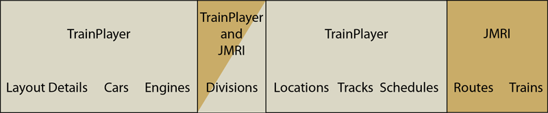
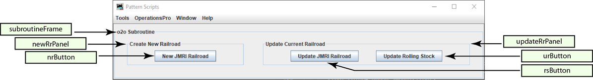

The ops to ops (o2o) subroutine is a group of utilities that are designed to be the glue that allows JMRI Operations Pro to be the operations engine for TrainPlayer©. The idea is to expand the capability of TrainPlayer©'s Advanced Ops feature to include the flexibility of Operations Pro, while also eleminating the tedium of keeping two databases synchronised.
The table below shows which program manages which elements.
">OperationsPatternScripts.PatternTracksSubroutine.Controller.makeSubroutinePanel()
">
"RD" :{ Railroad Details, optional part of the TrainPlayer layout.
"RR" : "", Parent railroad, the one that owns the tracks.
"OP" : "", Name of the particular operation being modeled.
"LO" : "", Location of the prototype.
"YR" : "", Calendar year being modeled.
"DV" : [], List of railroad divisions for this layout, comma seperated.
"SC" : "" Model railroad scale.
},
"o2o" : {
"PC": [ List of TrainPlayer car codes for passenger cars.
"B",
"BE",
"BH",
"BM",
"BMR",
"BMT",
"BP",
"BR",
"BX",
"CA",
"CS",
"D",
"DA",
"DB",
"DC",
"DL",
"DO",
"DP",
"DPA",
"MA",
"MB",
"MR",
"P",
"PA",
"PAS",
"PB",
"PBC",
"PBO",
"PC",
"PL",
"PO",
"PS",
"PSA"
],
"CC" : [ List of TrainPlayer caboose car codes.
"N",
"NM",
"NE"
],
"CFL" : [ Core File List
"OperationsCarRoster",
"OperationsEngineRoster",
"OperationsLocationRoster"
],
"SR" : { Scale Rubric JMRI Model Railroad scale.
"Z" : 1,
"N" : 2,
"TT" : 3,
"HOn3" : 4,
"OO" : 5,
"HO" : 6,
"Sn3" : 7,
"S" : 8,
"On3" : 9,
"O" : 10,
"G" : 11
},
"RF" : { Report Files Names of the TrainPlayer layout export files.
"TRL" : "TrainPlayer Report - Locations.txt",
"TRI" : "TrainPlayer Report - Industries.txt",
"TRR" : "TrainPlayer Report - Rolling Stock.txt"
},
"TR" : { Type Rubric Align TrainPlayer and JMRI track types.
"industry": "Spur",
"interchange": "Interchange",
"staging": "Staging",
"class yard": "Yard",
"XO reserved": "Spur"
}